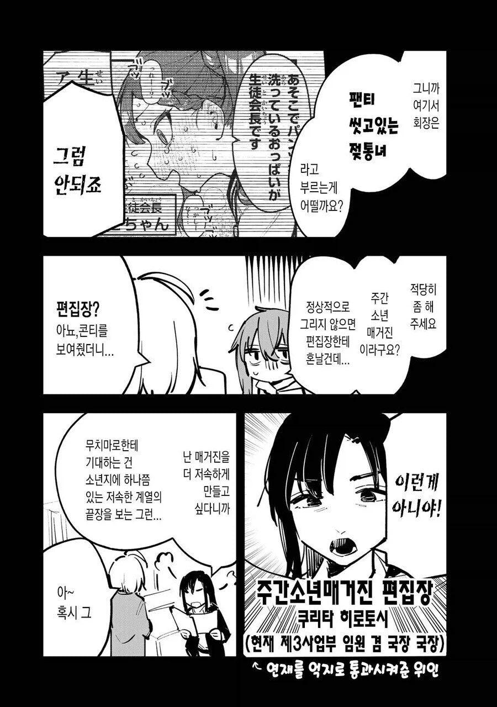

작가는 사리려고 했는데 편집장이 밀어줌

작가는 사리려고 했는데 편집장이 밀어줌
학생회에 구멍은 여러개있다
학생회 임원들
일본이 만화강국인 이유
뭔가해서 찾아봤더니 노트북으로 가슴짜부 시키던 애니구만
졸라 재미있더라ㅋㅋ
작가도 트위터계정 정지당하고 그러지않았으면 안사렸을거라고생각해..
매거진이 gto김전일 연재한 곳 아니랄까봐 거의 17금이더만
그것들 연재한 곳이었구나 ㅋㅋㅋ
편집장이 보는 눈이 있네 지금 잘나가서 싱글벙글일듯
나루토 같은 사례 보면 좋은 편집장 만나는 것도 중요함
저 만화는 작가-담당 편집자-편집장 셋다 똑같은부류라 서로 잘만남
학생회에도 구멍은있다